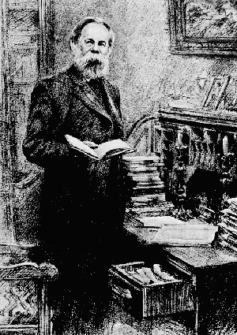

Works of Frederick Engels 1877

Written: September 1876 - June
1878;
Published: in Vorwärts, Jan 3 1877-July 7
1878;
Published: as a book, Leipzig 1878;
Translated: by Emile Burns from 1894 edition;
Source: Frederick Engels, Anti-Dühring. Herr
Eugen Dühring’s Revolution in Science, Progress Publishers, 1947;
Transcribed: meia@marx.org, August 1996;
Proofed and corrected: Mark Harris 2010.
Formerly known as Herr Eugen Dühring's Revolution in Science, Engels’ Anti-Dühring is a popular and enduring work which, as Engels wrote to Marx, was an attempt “to produce an encyclopaedic survey of our conception of the philosophical, natural-science and historical problems.”
Marx and Engels first became aware of Professor Dühring with his December 1867 review of Capital, published in Ergänzungsblätter. They exchanged a series of letters about him from January-March 1868.
He was largely forgotten until the mid-1870s, at which time Dühring entered Germany's political foreground. German Social-Democrats were influenced by both his Kritische Geschichte der Nationalökonomie und des Sozialismus and Cursus der Philosophie als streng wissenschaftlicher Weltanschauung und Lebensgestaltung. Among his readers were included Johann Most, Friedrich Wilhelm Fritzsche, Eduard Bernstein — and even August Bebel for a brief period.
In March 1874, the Social-Democratic Workers’ Party paper Volksstaat ran an anonymous article (actually penned by Bebel) favorably reviewing one of Dühring's books.
On both February 1 and April 21, 1875, Liebknecht encouraged Engels to take Dühring head-on in the pages of the Volksstaat. In February 1876, Engels fired an opening salvo with his Volksstaat article “Prussian Vodka in the German Reichstag”.
On May 24, 1876, Engels wrote Marx, saying there was cause to initiate a campaign against the spread of Dühring’s views. Marx replied the next day, saying Dühring himself should be sharply criticised. So Engels put aside his work on what would later become known as the book Dialectics of Nature. On May 28, he outlined to Marx the general strategy he planned to take against Dühring. It would take over two years to complete.
The book breaks into three distinct parts:
Part I: Philosophy — Written mainly between September 1876 and January 1877. Published as a series of articles entitled Herrn Eugen Dühring's Umwälzung der Philosophie in Vorwärts between January and May 1877. Later, beginning in 1878, with the first separate edition, the first two chapters of this part were made into an independent general introduction to all three parts.
Part II: Political Economy — Written mainly between June and August 1877. (The last chapter was actually written by Marx.) Published under the title Herrn Eugen Dühring's Umwälzung der politischen Oekonomie in Wissenschaftliche Beilage and in the supplement to Vorwärts between July and December 1877.
Part III: Socialism — Written mainly between August 1877 and April 1878. Published as Herrn Eugen Dühring's Umwälzung des Sozialismus in the supplement to Vorwärts between May and July 1878.
The Vorwärts serials elicited objections from Dühring's loyal adherents: during the May 27 1877 congress of the Socialist Workers' Party of Germany, they attempted to ban the on-going publication of it in the Party paper. Indeed, the sporadic delays in publication were largely due to their efforts.
In July 1877, Part I was published as a pamphlet. In July 1878, Parts II and III were combined into a second pamphlet.
In early July 1878, the complete work was first published as a book — with an added preface by Engels. In October 1878, Germany’s Anti-Socialist Law was instituted and Anti-Dühring was banned along with Engels’ other works. In 1886, a second edition appeared in Zurich. The third, revised and supplemented edition was published in Stuttgart, in 1894, i.e., after the Anti-Socialist Law was repealed (1890). This was the last edition during Engels' lifetime. It was translated into English for the first time in 1907, in Chicago.
In 1880, at Paul Lafargue's request, Engels took three chapters of Anti-Dühring and created one would become one of the most popular socialist pamphlets in the world: Socialism: Utopian and Scientific.
Original Preface: London, June 11,
1878
1885 Preface: London, September 23, 1885
1894 Preface: London, May 23, 1894
Chapter 1: General
Chapter 2: What Herr Dühring promises
Chapter 3: Classification.
Apriorism
Chapter 4: World Schematism
Chapter 5: Time and Space
Chapter 6: Cosmogony, Physics, Chemistry.
Chapter 7: The Organic World.
Chapter 8: The Organic World. (Conclusion)
Chapter 9: Eternal Truths.
Chapter 10: Equality.
Chapter 11: Freedom and Necessity.
Chapter 12: Quantity and Quality.
Chapter 13: Negation of the Negation.
Chapter 14: Conclusion.
Chapter 1: Subject Matter and
Method
Chapter 2: Theory of Force.
Chapter 3: Theory of Force. (Continuation)
Chapter 4: Theory of Force. (Conclusion)
Chapter 5: Theory of Value.
Chapter 6: Simple and Compound Labour.
Chapter 7: Capital and Surplus-Value.
Chapter 8: Capital and Surplus-Value. (Conclusion)
Chapter 9: Natural Laws of the Economy. Rent of
Land.
Chapter 10: From Kritische Geschichte.
Chapter 1: Historical.
Chapter 2: Theoretical.
Chapter 3: Production.
Chapter 4: Distribution.
Chapter 5: State, Family, Education.
Notes from Marx-Engels Collected
Works
Notes by Engels
Fragment on Ireland
Fragment on Thomas More.
Vorwärts, January 1877
First book edition, Leipzig, 1878
Last book edition in Engels' life, Stuttgart, 1894.
{kind=link}
{kind=link}
{kind=link}